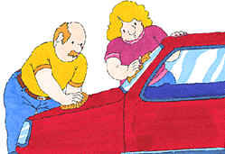

Washing the car
Washing the car
Keep your car looking great by washing it regularly.
Move the car onto the driveway.
Attach the water hose to a spout and pull the free end over to the car.
Fill a bucket with soapy water.
Use a sponge to apply the soapy water to the car and scrub off the dirt.
Rinse the car by spraying clean water from the hose.
Dry the car using a dampened chamois.
Result

Related information
Water hose